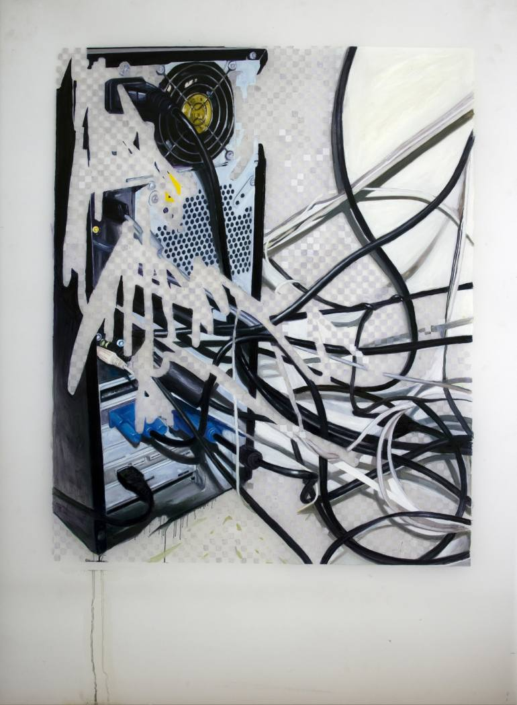
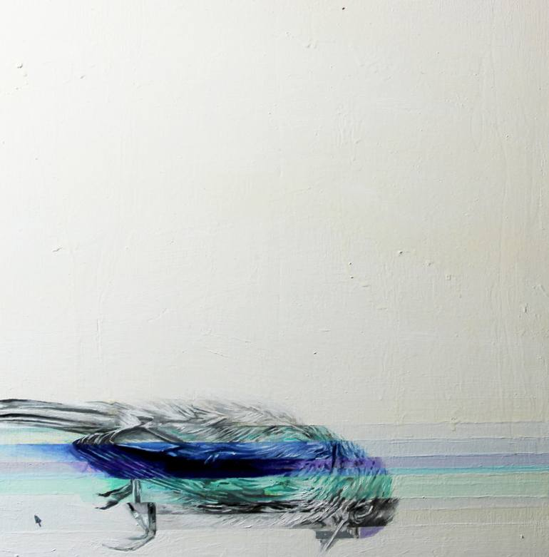
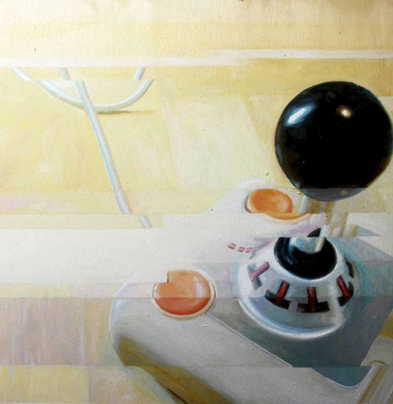

Simone Girodano
Simone Girodano is an Italian based artist who utilizes paint medium to create artworks that combine both the physical and technological realm. Simone is a graduate of the Accademia delle Belle Arti di Roma, and has worked as a freelance painter for a number of years. Simone uses his paintings as a means of expressing his thoughts on the software, and how it has become an everyday interface of our world. Simone states that,
'' The software is today our interface with the world, with others, with our memory and our imagination, a universal language through which the world communicates and a universal engine thank's what the world moves. Is a blanket that wraps all the areas of contemporary society and with our mobile devices are connected in anywhere and the touch screen, has brought us back to the touch, reversing the thought of Freud, in which man is afraid of his body and the eye has better on tattoo. And if in the ages of mechanics, we operated an extension of our body in a spatial sense, today, after over a century of technological use of electricity, we have extended our central nervous system itself in a global embrace that, at least for our planet, abolishes much time as space.
Simone's work seeks to represent the merging of the digital sphere with our everyday interactions. To represent this, he employs the use of pixilation in many of his paintings. He merges the digital and physical realm to create complex works that detail the progression of society today. Most of the time his pixilated paintings represent objects. However, on closer inspection they are only supposed to show the interaction of colors beings used. He also states that his paintings have no definitive meaning and are open to all interpretations.
Simone describes tangles of wires, cords, and other electronic devices as today's genera scenes.People in today's society experience emotions in the digital/technological realm.
Simone also uses glitches in his artwork. He believes there is beauty in the glitch, as it is something completely left up to chance. It creates and distorts in ways that are beyond the capabilities of humans.
